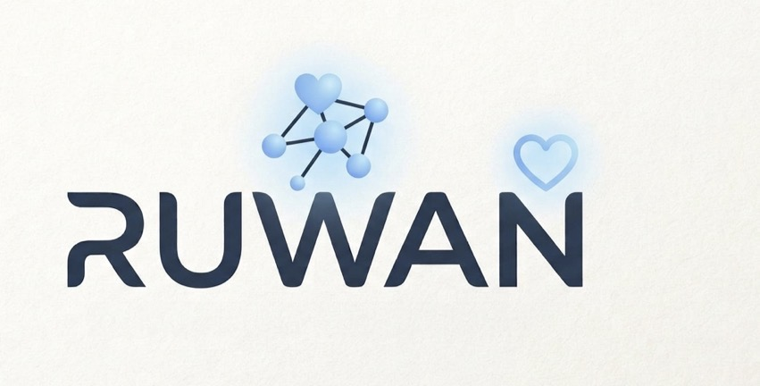

Ruwan se milte hain
honest aur anti-addictive AI madad — apni bhasha mein, apne andaaz mein.
shuru karne ke liye
Sign in karke aap hamari shartein maante hain

honest aur anti-addictive AI madad — apni bhasha mein, apne andaaz mein.
Sign in karke aap hamari shartein maante hain